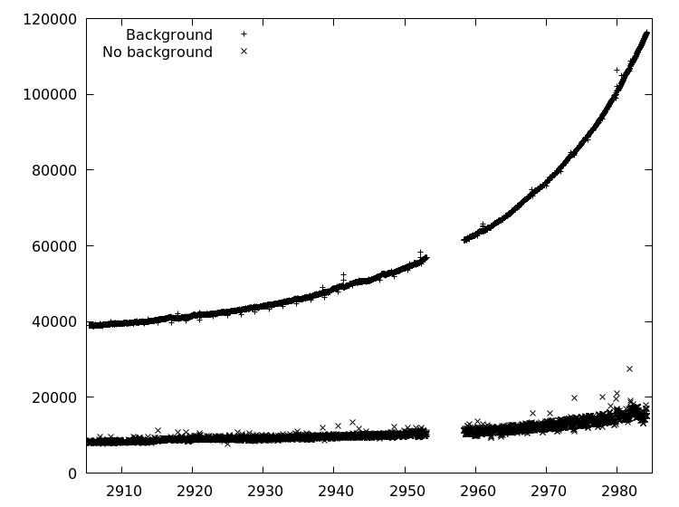
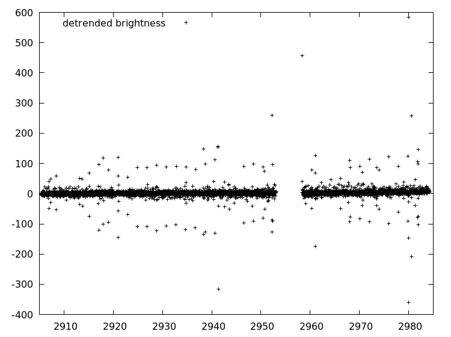
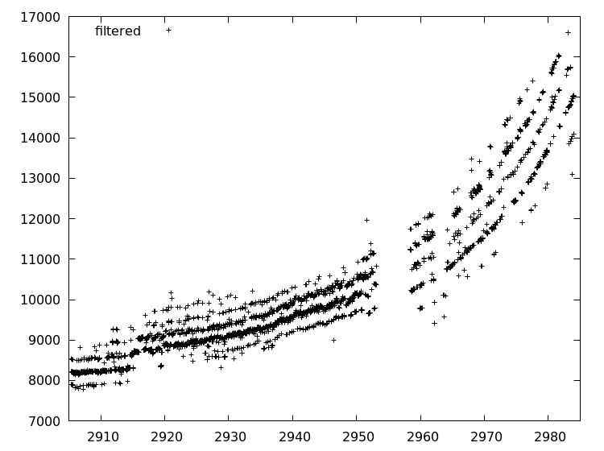
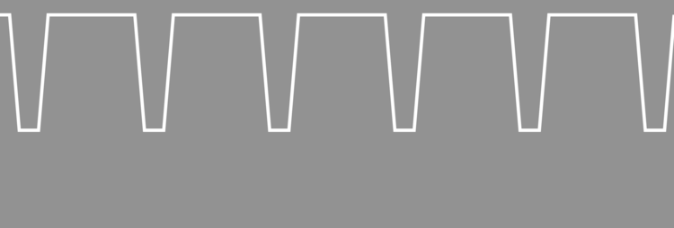

Finding The Planets
Exo-planets, planets that orbits distant stars, are a scientific marvel that appeal to our adventurous mind. In artist’s impressions they are portrayed as beautiful alien worlds dancing around their host star. The real world is not so visual but far more interesting.
During this workshop, you will learn the tricks and develop the tools with which you can analyse real-outer-world data in search of exo-planets. You will get your amateur astronomer merit badge when you find the hidden worlds.
What is this book about
This book is an compendium to the workshop Finding the Planets. The workshop walks you through various techniques and teaches you how to detect planets in photo-metric data.
It starts with observations of Trappist-1, a star system only 40 light-years from earth. It ends with finding the planets among the massaged data. Along the way you learn how to clean up data, what we are looking for, and how to find the actual planets.
This book challenges you to become a planet-hunter yourself. Together you and your trusty silicon companion go on a journey to explore the riches of the universe. So put on your science hat and go find those planets.
Background
Before we strap into our science-craft let's set the scene by learning about the background of all those marvelous discoveries.
In the following chapters, you will learn more about Trappist-1, how it was discovered and the data that we will use to find its planets.
Trappist-1
Trappist-1 is a star system 39 light-years from Earth. A light-year is the distance light travels in one year. That is approximately 369 trillion kilometers. Even though this seems an astronomically large distance, on a galactic scale, Trappist-1 and the sun are close neighbors.
Kepler Spacecraft
The Kepler spacecraft is a satellite that orbits the sun and acts as an telescope observing the universe without earths atmosphere interfering.
It was launched by NASA, as part of the Discovery Program. A program which focused on a series of lower-cost, highly focused space missions.
Science
In this part we will explore the science behind exo-planet discovery. We will detail the different methods of detecting exo-planets, and do some calculations on what the expect.
Exo-planet Discovery
Direct Observation
One way of discovering exo-planets is by direct observations. You take a telescope point it in the right direction, this involves a lot of luck, and hope to spot a planet orbiting around a distant star.
This technique can be used to discover the moons of Jupiter, but because most of the stars are so far away, it quickly becomes impossible. Instead we should use our knowledge to infer the existence of exo-planets.
Indirect Observation
With direct observations out of the window, the alternative is indirect observation. This entails to take measurements of a star, analyze the data and infer the existence of exo-planets.
The following sections and chapters will provide some examples of this method.
Observing Position
When a planet orbits a star, they do so around a mutual center of mass. Because of this a star will wobble, i.e. it will appear to change its apparent position.
Similar with direct observation, we could try to observe the wobble of a star directly. This method faces the same problems, i.e. the distances of the stars are so immense, the wobble becomes all but undetectable.
So we will quickly move on to other methods.
Doppler Effect
Just like a blaring whistle of a train drops pitch when it rushes by, light changes color depending if the light emitter is moving towards us or away from us. This is called the Doppler effect.
By careful measurement of the Doppler effect in star light one could discover regularities and infer the existence of planets. Even though this technique is used to discover exo-planets, we will be making use of a different technique.
Transit Method
When a planet moves in between its star and the Earth, it will make the star appear dimmer because it obscures some of the light rays. Despite planets often being very much smaller than their companion star, this effect is certainly measurable.
It is the transit method that we will use in this workshop to detect the planets around Trappist-1.
What To Look For
We are forming a model of a planet transit in order to make some calculations what to expect. Our model will be fairly crude, but it will suffices for understanding key characteristics of light curves.
This section has some math in it. It is used to understand how a light curve will look when a planet transits. Feel free to skip to the result if you feel inclined.
Light Curve
A light curve is
a graph of light intensity of a celestial object or region, as a function of time.
It graphs how bright some object appears in the sky over time. Our goal is to understand what the light curve looks like when a planet transits a star.
Model
We are modeling our planet transit in the following crude manner. We assume the star to be a square which radiates uniformly. The total luminosity is \(I_{0}\). So the luminosity per area \(\rho = \frac{I_{0}}{A}\), where \(A\) is the total area of the star.
We model our planet as a square as well. We will also assume that the planet will move with uniform speed across the stars image during the transit. When the planet is fully in front of the star, it block some of the rays of the star diminishing the luminosity to \(I_{t} = \rho \left(A - a\right)\), where \(a\) is the area of the planet.
We are interested in the relative drop in luminosity so we will divide \(I_{t}\) by \(I_{0}\) to get
\[ \frac{I_{t}}{I_{0}} = \frac{\rho \left(A - a\right)}{\rho A} = 1 - \frac{a}{A} \]
So the entire light curve looks something like this.

Characteristics
Even though our model is crude it does portrait important characteristics. We expect to find a dip in the luminosity when a planet transits its star. When a bigger planets transits a star we expect the dip to be more pronounced, since more of the star light is blocked from our view. Our model predicts this as well.
Astronomers have made far better models of planets, but our model will do just fine in finding the period of exo-planets.
How big dip to expect
Let's plug in some values of a star and a planet we know to see how big a dip we would expect. Jupiter orbits our Sun, so a distant observer could try to infer Jupiter's existence by observing the sun's luminosity. We will calculate the dip they can expect.
| Celestial Object | Radius (km) | Area |
|---|---|---|
| Sun | 696392 | 1.5235525e+12 |
| Jupiter | 69911 | 1.5354684e+10 |
The table above lists the radius and area of the sun and Jupiter. Plugging this into our model we determine that
\[ 1 - \frac{a}{A} = 1 - \frac{1.5\mathrm{e}{+10}}{1.5\mathrm{e}{+12}} = 1 - 1\mathrm{e}{-2} \approx 0.99 \]
That is only a one percentage drop!
Finding Planets
The following chapters will guide you in writing software that will detects planets around Trappist-1.
Two things will go hand in hand. Explaining what to do followed by you implementing that in your favorite programming language.
Format
We will chose to adhere to the following format. In almost every chapter we will output a Comma Separated Values (CSV) file. That file will serve as input for the next chapter.
Although this could be optimized in a single pipeline, foregoing the need to write and read CSV, with this format we have to ability to reflect. This will aid us in understanding our task at hand.
Outline
The following outline is typical for almost all the activities we are going to do in this workshop.
- Read data
- Process data
- Write data
Processing could be any of, but not limited to, transforming, filtering, analyzing or fitting. Now processing will be generating image data.
This could be your first encounter with some of the libraries we use. When we start using a library for the first time, we are going to be very specific. Once you get to know the library we leave you to fill in the blanks.
Tools
This workshop can be done in a variety of tools. We provide examples in different languages, but feel free to use your own tools. If you want to use a spreadsheet go for it. In principle you could use pen and paper, so think outside of the box.
Further Considerations
Almost every chapter encourages you to play with what you have created. We hope too give you some food for thought that might spark your interested. But feel free to come up with your own questions and observations and don't forget to share them.
Languages
Below you find links that will take you to language specific treatments of the workshop. Your are invited to bring your own tables to the table, we would love to see your way of work
Rust
Rust is a
systems programming language that runs blazingly fast, prevents segfaults, and guarantees thread safety.
We use it in to discover planets.
JavaScript
JavaScript is a
high-level, interpreted programming language. It is a language which is also characterized as dynamic, weakly typed, prototype-based and multi-paradigm.
it is a language people love to hate, but we are using it to discover planets.
Rust
This is the start of an exciting scientific journey where we will use Rust as our tool to find planets around Trappist-1.
FITS
The results of the NASA Kepler mission on observing Trappist-1 are available to the public. For your ease of use we downloaded the FITS files before hand.
What are FITS files
A FITS file is a
open standard defining a digital file format useful for storage, transmission and processing of scientific and other images. FITS is the most commonly used digital file format in astronomy. Unlike many image formats, FITS is designed specifically for scientific data and hence includes many provisions for describing photometric and spatial calibration information, together with image origin metadata.
We would like to use the FITS files directly, but unfortunately the library is not production ready yet. We created a Comma Seperated Values (CSV) file with the relevant data.
CSV
Comma Seperated values play an integral role in this workshop. We don't need an particular sharp tool to process CSV files. Basic reading and writing is more than enough. We are going to use the simple_csv crate for this.
Whenever we use the functionality we are going to explain what we are doing. If you want a head start take a look at the documentation.
Image
Now that we have our data in a CSV file, we are operating on it. The first thing that we should do is make an image.
Artist Impression

Often artists are commissioned to create a stunning visualization of new findings. This is also the case with the Trappist-1 news. Above you find an artist impression of Trappist-1.
The downside of this is that we could loose track of the actual data that is used. In order to get a sense of awe for the search of exo-planets, we are creating our own impression.
Creating an image
So go ahead and start a new Rust file named image.rs in the src/bin
directory of your project.
Reading Data
We will be reading our data from CSV. We will use the crate simple_csv for
that. In order to use it include the following lines in image.rs.
# #![allow(unused_variables)] #fn main() { extern crate simple_csv; use simple_csv::SimpleCsvReader; #}
The SimpleCsvReader expects some sort of BufReader, a buffered reader. We
can create one from a File. So include the following modules.
# #![allow(unused_variables)] #fn main() { use std::fs::File; use std::io::BufReader; #}
And in the main function add.
# #![allow(unused_variables)] #fn main() { let f = File::open("../long-cadence.csv").expect("input CSV to exist."); let buf = BufReader::new(f); #}
Notice that we are not handling errors in a graceful way. We are just going to arrange everything correctly and hope for the best.
With the buf we can create a CSV reader and read the first row of our data.
# #![allow(unused_variables)] #fn main() { let mut reader = SimpleCsvReader::new(buf); let row = reader.next_row().unwrap().unwrap(); #}
The unsightly double unwrap at the end comes from the interplay of the
Iterator trait that has a next function that returns an Option, and the
way simple_csv parses lines from CSV files into a Result. So the first
unwrap unwraps the Option, the second unwrap unwraps the Result.
We should make a mental note when working with the simple_csv crate, we should
mind our unwraps.
Processing Data
Our CSV file contains rows of floating point numbers. But the simple_csv crate
returns a slice of Strings. We will need to turn those Strings into floating
point numbers before we can properly process them.
We do this by iterating over the row. Remember how the first column
contained the time? We don't need it now so we will drop it for the moment.
# #![allow(unused_variables)] #fn main() { let mut current_row = row.iter(); current_row.next(); // dropping time #}
Next we can transform all the measurements in floating point numbers. We can do
that by using the FromStr trait. Import it with use std::str::FromStr. It
provides a method from_str that transforms &str into an other type.
# #![allow(unused_variables)] #fn main() { let raw: Vec<f64> = current_row .map(|s| f64::from_str(s).unwrap()) .collect(); #}
Note we need to include a use std::str::FromStr; line at the top of our file.
What we are going to do is map these measurements onto a gray scale that we can save as an image. We do this by determining the maximum measurement, determining the relative measurement compared to the maximum, and scaling it the an integer range from 0 to 255.
The following lines achieve this.
# #![allow(unused_variables)] #fn main() { let maximum = raw .iter() .fold(std::f64::MIN, |acc, v| acc.max(*v)); let data: Vec<u8> = raw .iter() .map(|s| s/maximum) .map(|s| 255.0 * s) .map(|s| s.floor() as u8) .collect(); #}
It uses a method fold with the following signature
# #![allow(unused_variables)] #fn main() { fn fold<B, F>(self, init: B, f: F) -> B where F: FnMut(B, Self::Item) -> B #}
It takes something that implements the Iterator trait, a initial value called
init and repeatedly calls f. The function f accepts two arguments. At
first it accepts the initial init value and the first element the Iterator
produces. After that it accepts the previous call to f return value with the
next value of the iterator. A fold returns the final return value of the
function f.
Writing data
Now that we have the gray-scale data, it is time to write it as an image. For
this we will use the png crate. Before we can use it add
# #![allow(unused_variables)] #fn main() { extern crate png; #}
To the top of the source file. We also need to include an import statement that makes our live working with PNGs easier.
# #![allow(unused_variables)] #fn main() { use png::HasParameters; #}
We are going to save the PNG into our working directory. Because the png crate
expects a BufWriter we will have to include the following modules.
# #![allow(unused_variables)] #fn main() { use std::env; use std::io::{BufWriter, BufReader}; #}
Notice that we already had imported the BufReader module. With these imports
we can create a BufWriter in one fell swoop.
# #![allow(unused_variables)] #fn main() { let mut path = env::current_dir().unwrap(); path.push(format!("trappist-1.{}.png", 0)); let file = File::create(path).unwrap(); let ref mut w = BufWriter::new(file); #}
Now we can hand over this BufWriter to a PNG Encoder, configure it to our
liking, create a PNG Writer and write the data.
# #![allow(unused_variables)] #fn main() { let mut encoder = png::Encoder::new(w, 11, 11); encoder.set(png::ColorType::Grayscale).set(png::BitDepth::Eight); let mut writer = encoder.write_header().unwrap(); writer.write_image_data(data.as_slice()).unwrap(); #}
Our Image
It is finally time to make our own impression of Trappist-1. Use cargo to
build and run your code.
> cargo build
> cargo run --bin image
Which creates

Appreciate the Image
At first glance the image can be a little underwhelming. But it is precisely this image that blew my mind! Being accustomed to the marvelous artist impression, when I learned about the actual data was 11x11 pixels I was hooked. How could anyone extract so much information from so little data?

I had to know and I hope you want to know too!
Further Considerations
- Make a bigger image with larger "pixels".
- Make an entire series of images, one for each row.
- Make a GIF or movie of the images.
Collage
In this chapter we will create a Collage of all the image in the long cadence file. Although it is a bit of a side-track, we will learn valuable things by looking at the image.
If you want, you can take a sneak peek.
{kind=link}
We will not go into details of reading the data and writing the transformed data. We assume that the previous chapters have given enough examples to learn from. Instead we are going to focus on processing the data.
Processing
There are a few questions we need to answer before we can create our collage.
- For a row of data and a column in that row, which pixel should we paint?
- What color should we paint that pixel?
Position
When we created the single image, we did not have to think about positioning explicitly. Because we want to make a collage we have some work to do.
First of all, lets state some facts.
- Each image is 11x11 pixels.
- There are 3599 rows of images.
The interesting thing about 3599 is that is 61x59. So we could make our collage almost a square with 61 columns and 59 rows of single images. With 11x11 images as base our collage will come in at 61x11 = 671 by 59x11 = 649.
Let's start by giving names to things. We start out with the tile base size,
i.e. the size of the original image. We are going to call that BASE. Next we
want 61 of our tiles to go horizontally, and we want 59 of our tiles to go
vertically. We will call these HORIZONTAL_TILES and VERTICAL_TILES
respectively.
# #![allow(unused_variables)] #fn main() { const BASE: usize = 11; const HORIZONTAL_TILES: usize = 61; const VERTICAL_TILES: usize = 59; #}
Now we can express all the other dimensions in terms of our BASE and
HORIZONTAL_TILES and VERTICAL_TILES.
# #![allow(unused_variables)] #fn main() { const WIDTH: usize = HORIZONTAL_TILES * BASE; const HEIGHT: usize = VERTICAL_TILES * BASE; const SIZE: usize = WIDTH * HEIGHT; #}
For example, SIZE is the number of pixels in our base tile. Let's continue and
figure out where the pixels go. There are two factors that determine the
position of the pixel. The which row that data is from, and which column the
data is in.
We will start with the row. Because we have 61 images along the x-axis of our
collage, the X-offset will be
# #![allow(unused_variables)] #fn main() { let offset_X = row_index % HORIZONTAL_TILES; #}
The Iter trait has a very nice method:
enumerate.
What it does is besides iterating over the row, it also provides us with the
row_index. We should keep this in mind when we are putting things together.
After HORIZONAL_TILES rows, we need to increase the Y-offset with one. This amounts to
# #![allow(unused_variables)] #fn main() { let offset_Y = row_index / HORIZONTAL_TILES; #}
Now for the offset within the image. The image is BASExBASE. So given an original
index in the row, we have for the
# #![allow(unused_variables)] #fn main() { let offset_x = original_index % BASE; let offset_y = original_index / BASE; #}
Now we can calculate the target index. For each offset_Y we need to go down an
entire BASE rows in our collage. This is BASExHORIZONTAL_TILESxBASE (=
7381). For each offset_X we need to shift BASE pixels down. For each
offset_y we need to go down an entire row. This is HORIZONTAL_TILESxBASE
(= 671). Finally, for each offset_x we need to shift 1 pixel
down. All together this is
# #![allow(unused_variables)] #fn main() { let target_index = offset_Y * (BASE * HORIZONTAL_TILES * BASE) + offset_X * BASE + offset_y * (HORIZONTAL_TILES * BASE) + offset_x #}
With these calculations we know where to paint the image pixel.
Color
From our experience from creating an image we have a fairly good idea which color to use. The only difference between the collage and the single image is that we want to use the same scale for each image.
So instead of dividing our value by the maximum value of a single image, we should divide by the global maximum.
Create a separate executable that will determine the global maximum of all the measurements that we can use in determining the color of the pixel.
Further Considerations
The following suggestions might help your understanding of the problem we facing, i.e. detecting planets in our image.
Take a long good look at your collage. Write down what you notice about the image. Ask yourself some questions and discuss your observations with somebody else.
Why do we need a global maximum? What would happen if we would stick to the maximum per image? What would that look like, and what would it tell you?
Brightness
We are going to detect the planets by observing drops in overall brightness. Before we are able to do this, we need to calculate the brightness. That is precisely the objective in this chapter.
We are going to create a CSV file with the first column the time of the measurement and the second column the brightness at that time.
Processing
For each row of data we would like to know how much Trappist-1 is radiating. What we are going to do is the following.
Take a row of data and
- Convert each value to a
f64. - Sum all the values to get the overall brightness.
Converting values to a f64 is something we did before. We are not going into
details for the conversion.
The summation of all the values can be written down very succinctly because the
Iterator trait has a trick up it's
sleeve. The Iter trait has a sum method. We can use it to calculate the sum
of all the brightness values. If we have our raw f64 values in the variable
raw, we can determine the sum with
# #![allow(unused_variables)] #fn main() { let sum: f64 = raw .iter() .sum(); #}
Removing Background
If we take a look at one of the images
we see that the background is not pitch black. This means that the background adds to the brightness, even though it does not contribute to the signal. So we start our journey with something we will come very familiar with, we will clean up our data.
What we are going to do is ignore the brightness value of anything below the average brightness. This transforms the image from above into the image below.

Still not perfect, but it is better than nothing.
In order to filter out the unwanted background we are going to need to know the average. We already know the sum, we just calculated it, so the average can be determined by
# #![allow(unused_variables)] #fn main() { let average = sum / (row.len() as f64); #}
Calculating the contribution of the values above the average can still be done succinctly. What we need to do is filter out the values that we want to sum. I.e. the values above the average.
# #![allow(unused_variables)] #fn main() { let filtered: f64 = raw .iter(). .filter(|&v| *v >= average) .fold(0f64, |acc, v| acc+v) #}
Graphing Results
Once you wrote your brightness results to a CSV file, they are ready for the following step. But if you are like me you probably want to see your results. This is where gnuplot comes in.
If you have saved your results as brightness.csv, the following gnuplot
session will plot your data.
set datafile separator ','
plot [2905:2985] "brightness.csv" using 1:2
We will annotate the above example a little, so that you can use gnuplot on your
own. The simple_csv library outputs CSV files with a comma as separator. This
difference from the default assumption of gnuplot. Luckily this can be remedied
with the first line.
The second line display the core of gnuplot; the plot command. The first
argument, i.e. [2905:2985], defines the range on the x-axis. It is optional
and will be inferred by gnuplot if it isn't present. If there would be a second
argument of that form, i.e. [min:max], that would be the range on the y-axis.
Here it is inferred.
The "brightness.csv" argument you probably recognize as the file you wrote
your data to. The plot command will use data in this file to plot.
The last refers to columns in the data. using 1:2 tells the plot command to
plot point with the first column as x-coordinate and the second column as
y-coordinate.
For a more extensive explanation of gnuplot we refer you to the gnuplot homepage.
If you have gone to the trouble of outputting the brightness with and without the background, your plot could look like the one below.

Further Considerations
Take a look at your data and write down what stands out to you. Discuss this with a neighbor.
Why is the average taken as a cut-off value? What are other options?
There is an obvious gap in our data. This is where the Kepler satellite stopped recording data due to a software reboot initiated by a cosmic ray event. Although the data was lost, the satellite still operates nominally.
Furthermore there is a trend in the overall brightness, more pronounced in the data with the background. This is also seen in our collage. We will have to smooth out that trend and that is precisely what we will in one of the next chapters.
Detrend
Take a look the brightness graph you made in the preceding chapter.

Notice how the graph tends to flare up. This is a systemic problem that we should correct. We are going to do that by finding what trend the graph is following, and adjusting for that.
Processing
Before, we processed each row individually. Now we need to operate on the entire sequence. So instead iterating over each row, we are going to transform it directly.
Because a SimpleCsvReader is an Iterator we can use our tricks on it. The
idiosyncrasies of the SimpleCsvReader make that we first need to unwrap a row.
Next we can map over the row of data and collect into a vector of tuples, the
entry being the time and the second entry being the brightness.
# #![allow(unused_variables)] #fn main() { let raw: Vec<(f64, f64)> = reader .map(|r| r.unwrap()) .map(data) .collect(); #}
The function data has the following signature
# #![allow(unused_variables)] #fn main() { fn data(row: Vec<String>) -> (f64, f64) #}
data is responsible for turning the raw columns of our CSV into f64 brightness values,
and selecting the correct ones.
Up until now we never returned more than two or three values. For our current
plan we are going to return more. In order to keep track of our data, we are
going to create a struct.
# #![allow(unused_variables)] #fn main() { struct DetrendData { time: f64, brightness: f64, trend: f64, difference: f64, } #}
We have created a few entries, some familiar, some unfamiliar. time and
brightness are pretty self-explanatory. difference is intended to hold the
difference between the brightness and the trend.
But how do we calculate the trend?
Strategies
Let us reflect on what we are trying to achieve. We have some data points \(y_{0}, y_{1}, \ldots, y_{n}\). We have a model that predicts that these values fluctuate around a given mean \(Y\), but for some reason or another, it doesn't.
Instead the values fluctuate around some function \(f\), for which we don't now the shape or form. This is called the trend.
Our goal is to approximate the trend function \(f\) by a function that we can calculate from the data. Next we can analyze the actual signal by removing the trend. In effect we will look at the de-trended signal \(y_{0} - t(0), y_{1} - t(1), \ldots, y_{n} - t(n)\). Here \(t\) is our approximation for the trend.
We shall do this by providing the values of our approximation.
There are numerous strategies for determining the trend in a sequence of data. Below you can find a strategy we have selected for this workshop.
Weighted Trend
With the notations from the preceding section the weighted trend algorithm is as follows. First you pick a parameter \(\alpha\) such that it lies between zero and one, i.e. \(0 \le \alpha \le 1\).
Next we will explain how to calculate each point of our approximation to the trend.
- \(t_{0} = y_{0}\). I.e. our first approximation is the first value of our sequence of data.
- \(t_{i} = \alpha y_{i} + (1-\alpha) t_{i-1}\). I.e. our trend tends towards the new value of our sequence, but is a but reluctant. It tends to stick to the previous values.
Let's implement this algorithm. With our DetrendData structure, we have an
opportunity to directly implement the different branches of our algorithm. We
start an impl block for DetrendData.
# #![allow(unused_variables)] #fn main() { impl DetrendData { } #}
Next we are going to translate the first branch of the algorithm. Since our data
gets delivered to us in the form of a (f64, f64) pair, we better accept it as
an argument.
# #![allow(unused_variables)] #fn main() { fn initial((time, brightness): (f64, f64)) -> DetrendData { DetrendData { time: time, brightness: brightness, trend: brightness, difference: 0f64, } } #}
It is little more than putting things in the right place. Next we will use the
current DetrendData that we have, and use it to determine what the next
DetrendData should be. Because this depends on the new data and the parameter
\(\alpha\), we better accept them both.
# #![allow(unused_variables)] #fn main() { fn next(&self, (time, brightness): (f64, f64), alpha: f64) -> DetrendData { let trend = alpha * brightness + (1f64 - alpha) * self.trend; DetrendData { time: time, brightness: brightness, trend: trend, difference: brightness - trend, } } #}
We calculate the trend as described in the algorithm, and calculate the
difference from the brightness and the freshly calculated trend. With a
convenience method that turns the DetrendData into a Vec<String> we are
ready to calculate our entire trend.
We will collect our data in a vector of DetrendData. Because we are going to
incrementally add new entries to it, it needs to be mutable.
# #![allow(unused_variables)] #fn main() { let mut sequence: Vec<DetrendData> = vec!(); #}
We also keep track of the last calculated DetrendData in a mutable variable
called data. Because we haven't calculated any value yet, its type is
Option<DetrendData>.
# #![allow(unused_variables)] #fn main() { let mut data: Option<DetrendData> = None #}
This has the added benefit that we can differentiate between when to initialize data, and when to calculate the next data, during our iteration over our raw data.
# #![allow(unused_variables)] #fn main() { for candidate in raw { match data { None => { data = Some(DetrendData::initial(candidate)) } Some(previous) => { let next = previous.next(candidate, alpha); sequence.push(previous); data = Some(next) } } } #}
Further Considerations
How does the weighted detrend behave for known functions? Try to plot an step function, i.e. a series that starts out 0 and than is 1 through out, and detrend it.
What other kind of detrend strategies can you come up with?
Filter
Take a look the detrended brightness graph you made in the preceding chapter.

There is a clear band of data. I.e. regions where most of the data-points lie. But what also stands out enormous are outliers. For example, most points are below 50, but some shoot out all the way to 600. They are clearly erroneous.
There are various reasons how these outliers can occur. Some are the results of satellite maneuvers. What ever there origin, in this chapter we will filter those outliers.
Processing
We are going to rely on our data function again. Remeber the data function
is responsible for:
turning the raw columns of our CSV into
f64values, and selecting the correct ones.
Now that we have our data, we can filter it in one swoop. Iter still has a
trick up it's sleeve. It sports a filter method that fits our needs. Study the
code below.
# #![allow(unused_variables)] #fn main() { let result: Vec<(f64, f64)> = reader .map (|r| r.unwrap()) .map(data) .filter(|&(_,difference)| difference.abs() <= threshold) .collect(); #}
The code above is depending on a threshold. Once chosen, the result can be written to a CSV file.
Further Considerations
The algorithm above depends on a certain threshold. What value should we use? Try some different values and try to get a feel for what works. Discuss your choices with somebody else.
Median
We filtered our brightness graph and got something like this.

We would like to know around what kind of average these points are fluctuating. For that we are calculating the median.
Calculation
Let's say we have a sequence of values \(y_{0}, y_{1}, \ldots, y_{n-1}\). The median of these numbers is defined as follows.
- Sort the numbers into a sequence \(z_{0}, z_{1}, \dots, z_{n-1}\).
- From this sorted sequence, pick the middle number. If there is no middle, take the average of the middle two.
Lets work out an example. Take a look at the following example
\[ 31, 41, 59, 26, 53, 58, 97, 93, 23, 84 \]
If we sort this sequence we get
\[ 23, 26, 31, 41, 53, 58, 59, 84, 93, 97 \]
Because there are an even number of values, we should take the average of the of the two middle values. The average of \(53\) and \(58\) is \(\frac{53 + 58}{2} = \frac{111}{2} \approx 55.5\).
Make a library.
Because we are going to use the median several times, we are going to create a
library. Let's start with our lib.rs.
In our lib.rs we are announcing a module called median.
# #![allow(unused_variables)] #fn main() { pub mod median; #}
There are different ways to create this module. Either creating a median.rs
file inside the src directory. Or creating a median directory inside the
src directory, which contains a mod.rs file. Which every you choose, let's
implement a median_of function.
Our median_of function will have a &Vec<f64> as parameter and return the
median f64. Once we have a sorted copy of the data called copy, getting the
median comes down to determining if the number of elements is even or odd, and
performing the right calculation.
# #![allow(unused_variables)] #fn main() { let n = data.len(); let middle: usize = n / 2; let median = if n % 2 == 1 { copy[middle] } else { (copy[middle] + copy[middle - 1]) / 2.0; } #}
But how do we sort the original data?
Sorting side-quest
There are a few interesting tidbits when sorting a Vec<f64> that we are going
to make a side-quest out of it. While looking into Vec<T>
documentation,
you can come across the method sort. Let's see if we can use it.
# #![allow(unused_variables)] #fn main() { let mut vs: Vec<f64> = vec!(3.0, 2.0, 1.0); vs.sort(); #}
Unfortunately this doesn't compile.
Compiling playground v0.0.1 (file:///playground)
error[E0277]: the trait bound `f64: std::cmp::Ord` is not satisfied
--> src/main.rs:6:4
|
6 | vs.sort();
| ^^^^ the trait `std::cmp::Ord` is not implemented for `f64`
error: aborting due to previous error
error: Could not compile `playground`.
To learn more, run the command again with --verbose.
Which could come as a surprise. The Ord trait determines an ordering of
elements. Certainly we can determine whether `0.0 < 1.0``?
# #![allow(unused_variables)] #fn main() { assert!(0.0f64 < 1.0f64); #}
Luckily we can. So what is going on? Rust has two related traits for comparison:
PartialOrd and
Ord. The main difference
is that Ord is supposed to be total. I.e. any type that implements the Ord
trait should be able to compare any pair of values that have the type.
In other words, if you implement the Ord trait you should be able to answer
yes to one and only one of the following questions with for values a and
b in the type:
- Is
a < b? - Is
a == b? - Is
a > b?
The problem with f64 is that is implements IEEE-754, the standard for
arithmetic with floating point numbers. This standard defines a value NaN,
not a number, which is not comparable with any other value.
So f64 can not be complete and follow the standard at the same time.
Fortunately PartialOrd is implemented for f64. So as long as we do not
compare with NaNs, which we don't intend to do, we should be safe.
Back to sorting, the sort method expects that the Ord is implemented, so we
can not use it. Vec<T> also has a sort_by method, that allows to pass a compare
function. We can use this to our advantage by relying on the PartialOrd trait.
# #![allow(unused_variables)] #fn main() { let mut vs: Vec<f64> = vec!(3.0, 2.0, 1.0); vs.sort_by(|a, b| a.partial_cmp(b).unwrap()); println!("{:?}", vs); #}
This correctly sorts our vector. But notice that the vs variable is declared
mutable. Our signature doesn't expect to have a mutable reference, so we need to
copy our data first.
Copying Data
We need a mutable copy of our data. Luckily the Vec<T> API provides an other
method; copy_from_slice. We use it as
# #![allow(unused_variables)] #fn main() { let n = data.len(); let mut copy = vec!(0f64; n); copy.copy_from_slice(&data); #}
This is the final piece in the median puzzle. We are able to put everything
together and write our median_of function.
Form Groups
We do not want to calculate the median of our entire sequence. Instead we want to move a sliding window over our data and calculate the median of that specific window.
For that we need to group our data. Let's create that function.
# #![allow(unused_variables)] #fn main() { fn groups(data: &Vec<f64>, group_size: usize) -> Vec<Vec<f64>> { let mut groups: Vec<Vec<f64>> = vec!(); for end_index in group_size .. data.len() + 1 { let mut group: Vec<f64> = vec!(); for index in (end_index - group_size) .. end_index { group.push(data[index]) } groups.push(group) } groups } #}
Median Filter
We are now in the position to create a median_filter function. I.e. a function
that calculates the median of a sliding window over our data. With all of our
preparations it writes itself as
# #![allow(unused_variables)] #fn main() { pub fn median_filter(data: &Vec<f64>, window: usize) -> Vec<f64> { groups(data, window) .iter() .map(median_of) .collect() } #}
With our library all done, we can start out processing proper.
Processing
But wait! Our data arrives as f64-pairs, i.e. (f64, f64), and we create
median_filter to operate on a single f64 value. Did I lead you down a wrong
path?
Not entirely. Once again the standard library, in the form of the Iter trait,
has a trick up their sleeve. It comes in the pair of methods zip and unzip.
You can find their signatures below.
With unzip you can take a sequences of pairs and return a pair of sequences.
zip goes the other way.
Let's see how we can use them. After getting the raw data, we can use unzip to
extract the individual components.
# #![allow(unused_variables)] #fn main() { let (times, values): (Vec<f64>, Vec<f64>) = raw .iter() .cloned() .unzip(); #}
The cloned call is because we need to take ownership of our data. Next we can
use our median_filter from our own library. Make sure to reference our own
external crate and import the correct function.
# #![allow(unused_variables)] #fn main() { let median_times = median_filter(×, window_size); let median_values = median_filter(&values, window_size); #}
Finally we can zip together these two vectors again to get our result.
# #![allow(unused_variables)] #fn main() { let result = median_times.iter().zip(median_values); #}
Storing this into a CSV file makes it available for the next step.
Further Considerations
You have created a library that contains some functions. How do you know that they are implemented correctly? Try to add some tests that increases your confidence in your code.
The median_filter accepts an window_size argument. What is a good value?
Why haven't we used same the method we used to detrend the data?
Fitting
We have created a plot of the median.

We would like to find planets in it. Finding planets amounts to selecting a transit curve that nicely fits our data. We our going to divide that task in the following sub-tasks.
- Generating a transit curve series
- Iterating over all transit curve parameters
- Scoring each candidate transit curve and selecting the best
Let us create a module for this as well. We will call it fit.
Transit Curves

The above image shows a typical transit curve where the planet transits the host star multiple times. From this diagram we can learn about the parameters that make up such a transit.
Below we list the parameters important in our transit curve.
- Period. The time between the start of one transit and the start of the next transit.
- Base. Height of the line, when no planet transits. This is often normalized, but because of the choices we made, we need this parameter.
- Depth. How far the luminosity drops when the planets transits. This is related to the size of the planet.
- Duration. How long the luminosity stays at full depth.
- Decay. How much time it takes the luminosity to go from the
basetodepth. In our model the attack, i.e. time it takes the luminosity to go fromdepthback tobase, and decay are the same. - Phase. Where in the period does the periodic function start.
Below you find a struct and an implemented constructor that can track this
data.
# #![allow(unused_variables)] #fn main() { pub struct Transit { period: f64, base: f64, depth: f64, duration: f64, decay: f64, phase: f64, } impl Transit { fn new((period, base, depth, duration, decay, phase): (f64,f64,f64,f64,f64,f64)) -> Transit { Transit { period, base, depth, duration, decay, phase } } } #}
Notice that the new function accepts a tuple of floating point numbers. We
will use this when we iterate over the parameters.
What we also want to know is, when we have got a time, what is the
corresponding value of this transit curve. For that we are going to implement a
value method on `Transit
What we also want to know is, when we have got a time, what is the corresponding value of this transit curve. For that we are going to implement avalue method on Transit.
The interesting times are
- Before the decay. The value should be
base - During the decay. The value should linearly interpolate between
baseandbase-depth. - During full transit. The value should be
base-depth - During the attack. The value should linearly interpolate between
base-depthandbase. - After the transit. The value should be
base.
Implement the above logic into a value method for Transit.
Iterate Parameters
Our transit curve has five parameters. We would like to generate candidate transit curves and check how well they fit our data. This can be accomplished by iterating over the five parameters, and mapping them into a transit curve.
FloatIterator
We will first focus on an iterator for a single f64. We want all floating
point numbers between a start and finish, increasing each new number with a
certain step. We will create a struct that keeps track of where we are.
# #![allow(unused_variables)] #fn main() { pub struct FloatIterator { start: f64, finish: f64, step: f64, current: u64, } #}
Implementing a new constructor should set the current to 0 and accept
start, finish and step as parameters.
Next we need to implement Iterator for FloatIterator. We must import
std::iter::Iterator so that we can easily reference it in our code. In the
next method of the Iterator trait we need to decide if we need to return a
Some or a None. This depends on the our intended return value. I.e. if the
value start + step * current is less then or equal to our finish.
# #![allow(unused_variables)] #fn main() { impl Iterator for FloatIterator { type Item = f64; fn next(&mut self) -> Option<Self::Item> { let value = self.start + self.step * (self.current as f64); if value <= self.finish { self.current += 1; Some(value) } else { None } } } #}
This wraps up our FloatIterator.
Exemplar TupleIterator
Next we are going to create a TupleIterator. It is going to show all the
necessary tools to create the actual TupleIterator we want, without getting
distracted by the tedious details.
Because we want to express multiple times a range of floating point numbers we
are interested in, we are going to create a struct to keep track of start,
finish and step.
# #![allow(unused_variables)] #fn main() { pub struct FloatRange { start: f64, finish: f64, step: f64, } #}
implementing a new constructor for FloatRange is nothing more than excepting
the correct parameters and passing them in the struct. Having a FloatRange
allows us to ask it for the value belonging to a certain index. Let's extend the
implementation of FloatRange with an index function. The actual
implementation looks very familiar.
# #![allow(unused_variables)] #fn main() { fn index(&self, index: u64) -> Option<f64> { let value = self.start + self.step * (index as f64); if value <= self.finish { Some(value) } else { None } } #}
Now that we can express the floating point range we are interested in, we can
use that in our TupleIterator. The responsibility of the TupleIterator is to
keep track of two indices into two separate FloatIterator. Because we need to
be able to "restart" the FloatIterator we are not actually use a
FloatIterator. Instead we choose to do the iterating our selves.
We start with a structure that will keep track for us.
# #![allow(unused_variables)] #fn main() { pub struct TupleIterator { first: FloatRange, second: FloatRange, current: (u64, u64), } #}
It looks a lot like the FloatIterator. The main difference is that we need to
keep track of two different ranges, and two different indices into these
iterators. Implementing a new is just like the FloatIterator little more than
accepting the correct parameters and initializing the current indices to
(0,0).
Now for implementing Iterator for TupleIterator. It comes down to keeping
track of the right indices. Let's look at the implementation.
# #![allow(unused_variables)] #fn main() { impl Iterator for TupleIterator { type Item = (f64, f64); fn next(&mut self) -> Option<Self::Item> { let (first_index, second_index) = self.current; match self.first.index(first_index) { Some(first_value) => { match self.second.index(second_index) { Some(second_value) => { self.current = (first_index, second_index + 1); Some((first_value, second_value)) }, None => { self.current = (first_index + 1, 0); self.next() }, } }, None => None, } } } #}
Reading the code, we discover that we determine two values, one for each
FloatRange. If the first FloatRange return None we are done. If it returns
some value, we see what the second FloatRange returns. If that also returns
some value, we do the following things.
- Increment the second index.
- Return the tuple of values.
If the second FloatRange doesn't return some value, we know that it exhausted
its range. We then increment the first index, resetting the second index. In
effect we want to the second iterator from scratch, but with a new first value.
Next we use the power of recursion to determine what the value should be with
the new indices.
Although it doesn't look pretty, it does its job. It is your task to extend this example to iterate over all transit parameters.
Score
We are going to score a Transit with the
least squares method. This
method sums the squares of the difference between two series. That is easier
said than done. Lets look at following code.
# #![allow(unused_variables)] #fn main() { pub fn least_squares(xs: &Vec<f64>, ys: &Vec<f64>) -> f64 { xs.iter().zip(ys) .map(|(a,b)| (a-b).powi(2)) .sum() } #}
We define a function names least_squares that accepts to vectors of floating
points numbers. Next we recognize our dear friend: the iter method. We use it
on the first vector and zip it with the second vector. On the vector of pairs we
map the function that calculates the squared difference. We finish with summing
all the numbers, getting our result.
With all the parts in place we are ready to start processing.
Processing
We need to compare candidate transit curves with our median, so we need to read our median.csv. Because we would like to process the times and the values separedly we use the unzip trick we learned earlier.
# #![allow(unused_variables)] #fn main() { let (times, values): (Vec<f64>, Vec<f64>) = raw .iter() .cloned() .unzip(); #}
Processing consist for a big part of a main loop that iterates over our transit parameters. This is depend on a number of FloatRanges and this is where you can shine. By looking at your median.csv data you can guess good ranges, and with some luck you will find planets.
We need to keep track of the best transit curve. So we initialize variables before our main loop.
# #![allow(unused_variables)] #fn main() { let mut best_score = f64::MAX; let mut best_transit: Option<Transit> = None; #}
In order to make use of the f64::MAX we need to import std::f64. Not that the best score will actually be the lowest value, so it is save to initialize it to the maximum value.
Inside our loop, we can create a transit curve from the parameters.
# #![allow(unused_variables)] #fn main() { let transit = Transit::new(parameters); #}
The transit can be used to determine the values at the times we observed by mapping over the times and using the value method.
# #![allow(unused_variables)] #fn main() { let transit_values: Vec<f64> = times.iter().map(|t| transit.value(t)).collect(); #}
Scoring is little more than calling the right function.
# #![allow(unused_variables)] #fn main() { let score = least_squares(&transit_values, &values); #}
Now that we have the score, we need to compare it with the best score we now about, and update our best candidate accordingly.
# #![allow(unused_variables)] #fn main() { if score < best_score { best_score = score; best_transit = Some(transit.clone()); } #}
When the loop finishes we would like to know which transit is the best. So we prepare to print it to console, and calculate the actual values, which you can write to a CSV file.
# #![allow(unused_variables)] #fn main() { let best_transit = best_transit.unwrap(); let best_transit_values: Vec<f64> = times.iter().map(|t| best_transit.value(t)).collect(); println!("{:?}", best_transit); let result = times.iter().zip(best_transit_values); #}
Lets fly through our candidates and see what planet you can find.
Further Considerations
How do you know that you implemented the various libraries correctly? Have you tested them?
The way that we generate our transit parameters is going through all possible values. This seems a bit wastefull. Can you come up with a better way? Discussing your thoughts with somebody.
We used the method of least squares to score a transit curve. What other scoring mechanism can you think of. What difference would it make?
JavaScript
This is the start of an exciting scientific journey where we will use JavaScript as our tool to find planets around Trappist-1.
FITS
The results of the NASA Kepler mission on observing Trappist-1 are available to the public. For your ease of use we downloaded the FITS files before hand.
What are FITS files
A FITS file is a
open standard defining a digital file format useful for storage, transmission and processing of scientific and other images. FITS is the most commonly used digital file format in astronomy. Unlike many image formats, FITS is designed specifically for scientific data and hence includes many provisions for describing photometric and spatial calibration information, together with image origin metadata.
We would like to use the FITS files directly, but unfortunately the library is not production ready yet. We created a Comma Seperated Values (CSV) file with the relevant data.
CSV
Comma Seperated values play an integral role in this workshop. We don't need an
particular sharp tool to process CSV files. Basic reading and writing is more
than enough. We are going to use the csv package for this.
Whenever we use the functionality we are going to explain what we are doing. If you want a head start take a look at the documentation.
Image
Now that we have our data in a CSV file, we are operating on it. The first thing that we should do is make an image.
Artist Impression
Often artists are commissioned to create a stunning visualization of new findings. This is also the case with the Trappist-1 news. Above you find an artist impression of Trappist-1.
The downside of this is that we could loose track of the actual data that is used. In order to get a sense of awe for the search of exo-planets, we are creating our own impression.
Creating an image
So go ahead and start a new JavaScript file named image.js in the bin
directory of your project.
Reading Data
We will be reading our data from CSV. We will use the csv packege for
that. In order to use it include the following lines in image.js.
const parse = require('csv-parse');
const stringify = require('csv-stringify');
const transform = require('stream-transform');
var parser = parse();
var stringifier = stringify();
var transformer = transform(function(data){
return data;
});
The parser, transformer and stringifier can be piped together. So we need
something to act as a source and a drain. We are going to read from file and
write to file so we include de fs module.
const fs = require('fs');
And in the script we add.
var input = fs.createReadStream('../long-cadence.csv');
var output = fs.createWriteStream('out.csv');
Notice that we are not handling errors in a graceful way. We are just going to arrange everything correctly and hope for the best.
We now can pipe the input, via our chain into the output.
input
.pipe(parser)
.pipe(transformer)
.pipe(stringifier)
.pipe(output);
This is our processing pipeline. You will probably use it for a lot, so make sure that you understand what is going on. If you run it, nothing really interesting is going on. Basically we just copied the original data. Let's change that.
Processing Data
The transformer can be used to change the data but we are not going to do that just now. Instead we want to operate on each row that gets piped through our pipeline.
We can do that with the following lines of code.
transformer.on('readable', function(){
var row;
while (row = transformer.read()) {
// process a row
}
});
Our CSV file contains rows of floating point numbers. The first value is the time of the recording and the rest are image values, one for each pixel of a 11x11 image.
So inside the transformer while loop, i.e. where we process a row, we are going
to create a PNG file. Before we can do that we need to require the node-png
module.
const PNG = require('node-png').PNG;
Creating the PNG file by calling the constructor with the correct options.
var png = new PNG({
width: 11,
height: 11,
filter: -1
});
Now we are ready to process our row. What we are going to do is map these measurements onto a gray scale that we can save as an image. We do this by determining the maximum measurement, determining the relative measurement compared to the maximum, and scaling it the an integer range from 0 to 255.
var data = row.slice(1);
var max = Math.max(...data);
data.forEach(function(value, index){
var gray = value/max * 255;
png.data[4*index + 0] = gray;
png.data[4*index + 1] = gray;
png.data[4*index + 2] = gray;
png.data[4*index + 3] = 0xff;
});
Finally, we write our image.
png.pack().pipe(fs.createWriteStream('out.png'));
Our Image
It is finally time to make our own impression of Trappist-1. Use node to run
your code.
> node bin/image.js
Which creates
Appreciate the Image
At first glance the image can be a little underwhelming. But it is precisely this image that blew my mind! Being accustomed to the marvelous artist impression, when I learned about the actual data was 11x11 pixels I was hooked. How could anyone extract so much information from so little data?
I had to know and I hope you want to know too!
Further Considerations
- Make a bigger image with larger "pixels".
- Make an entire series of images, one for each row.
- Make a GIF or movie of the images.
Collage
In this chapter we will create a Collage of all the image in the long cadence file. Although it is a bit of a side-track, we will learn valuable things by looking at the image.
If you want, you can take a sneak peek.
We will not go into details of reading the data and writing the transformed data. We assume that the previous chapters have given enough examples to learn from. Instead we are going to focus on processing the data.
Processing
There are a few questions we need to answer before we can create our collage.
- For a row of data and a column in that row, which pixel should we paint?
- What color should we paint that pixel?
Position
When we created the single image, we did not have to think about positioning explicitly. Because we want to make a collage we have some work to do.
First of all, lets state some facts.
- Each image is 11x11 pixels.
- There are 3599 rows of images.
The interesting thing about 3599 is that is 61x59. So we could make our collage almost a square with 61 columns and 59 rows of single images. With 11x11 images as base our collage will come in at 61x11 = 671 by 59x11 = 649.
Let's start by giving names to things. We start out with the tile base size,
i.e. the size of the original image. We are going to call that BASE. Next we
want 61 of our tiles to go horizontally, and we want 59 of our tiles to go
vertically. We will call these HORIZONTAL_TILES and VERTICAL_TILES
respectively.
const BASE = 11;
const HORIZONTAL_TILES = 61;
const VERTICAL_TILES = 59;
Now we can express all the other dimensions in terms of our BASE and
HORIZONTAL_TILES and VERTICAL_TILES.
# #![allow(unused_variables)] #fn main() { const WIDTH = HORIZONTAL_TILES * BASE; const HEIGHT = VERTICAL_TILES * BASE; const SIZE = WIDTH * HEIGHT; #}
For example, SIZE is the number of pixels in our base tile. Let's continue and
figure out where the pixels go. There are two factors that determine the
position of the pixel. The which row that data is from, and which column the
data is in.
We will start with the row. Because we have 61 images along the x-axis of our
collage, the X-offset will be
var offset_X = row_index % HORIZONTAL_TILES;
We keep track of the row_index manually.
After HORIZONAL_TILES rows, we need to increase the Y-offset with one. This amounts to
var offset_Y = Math.floor(row_index / HORIZONTAL_TILES);
Now for the offset within the image. The image is BASExBASE. So given an original
index in the row, we have for the
# #![allow(unused_variables)] #fn main() { var offset_x = original_index % BASE; var offset_y = Math.floor(original_index / BASE); #}
Now we can calculate the target index. For each offset_Y we need to go down an
entire BASE rows in our collage. This is BASExHORIZONTAL_TILESxBASE (=
7381). For each offset_X we need to shift BASE pixels down. For each
offset_y we need to go down an entire row. This is HORIZONTAL_TILESxBASE
(= 671). Finally, for each offset_x we need to shift 1 pixel
down. All together this is
var target_index = offset_Y * (BASE * HORIZONTAL_TILES * BASE) +
offset_X * BASE +
offset_y * (HORIZONTAL_TILES * BASE) +
offset_x;
With these calculations we know where to paint the image pixel.
Color
From our experience from creating an image we have a fairly good idea which color to use. The only difference between the collage and the single image is that we want to use the same scale for each image.
So instead of dividing our value by the maximum value of a single image, we should divide by the global maximum.
Create a separate script that will determine the global maximum of all the measurements that we can use in determining the color of the pixel.
Further Considerations
The following suggestions might help your understanding of the problem we facing, i.e. detecting planets in our image.
Take a long good look at your collage. Write down what you notice about the image. Ask yourself some questions and discuss your observations with somebody else.
Why do we need a global maximum? What would happen if we would stick to the maximum per image? What would that look like, and what would it tell you?
Brightness
We are going to detect the planets by observing drops in overall brightness. Before we are able to do this, we need to calculate the brightness. That is precisely the objective in this chapter.
We are going to create a CSV file with the first column the time of the measurement and the second column the brightness at that time.
Processing
For each row of data we would like to know how much Trappist-1 is radiating. What we are going to do is the following.
Take a row of data and sum all the values to get the overall brightness.
the first thing that we need to do is transform our data in to floating point
numbers. When our csv module reads in a row of data, it is a piece of text.
The
map
function helps in this regard.
brightness
.map(function(values){ return parseFloat(values; )})
The summation of all the values can be written down very succinctly because the
Array
prototype has a trick up it's sleeve. The Array.prototype has a reduce method. We
can use it to calculate the sum of all the brightness values. If we have our values
in the variable brightness, we can determine the sum with
const sum = brightness
.map(function(values){ return parseFloat(values; )})
.reduce(function(partial_sum, value){
return partial_sum + value;
}, 0);
Removing Background
If we take a look at one of the images
we see that the background is not pitch black. This means that the background adds to the brightness, even though it does not contribute to the signal. So we start our journey with something we will come very familiar with, we will clean up our data.
What we are going to do is ignore the brightness value of anything below the average brightness. This transforms the image from above into the image below.
Still not perfect, but it is better than nothing.
In order to filter out the unwanted background we are going to need to know the average. We already know the sum, we just calculated it, so the average can be determined by
const average = sum / brightness.length;
Calculating the contribution of the values above the average can still be done succinctly. What we need to do is filter out the values that we want to sum. I.e. the values above the average.
const filtered_sum_= brightness
.filter(function(value){ return value >= average; })
.reduce(function(partial_sum, value){ return partial_sum + value; }, 0);
What we want to return in our transformer is the pair of the time, we is the
first value of our row of data i.e. const time = data[0], and our
filtered_sum.
return [time, filtered_sum];
Graphing Results
Once you wrote your brightness results to a CSV file, they are ready for the following step. But if you are like me you probably want to see your results. This is where gnuplot comes in.
If you have saved your results as brightness.csv, the following gnuplot
session will plot your data.
set datafile separator ','
plot [2905:2985] "brightness.csv" using 1:2
We will annotate the above example a little, so that you can use gnuplot on your
own. The simple_csv library outputs CSV files with a comma as separator. This
difference from the default assumption of gnuplot. Luckily this can be remedied
with the first line.
The second line display the core of gnuplot; the plot command. The first
argument, i.e. [2905:2985], defines the range on the x-axis. It is optional
and will be inferred by gnuplot if it isn't present. If there would be a second
argument of that form, i.e. [min:max], that would be the range on the y-axis.
Here it is inferred.
The "brightness.csv" argument you probably recognize as the file you wrote
your data to. The plot command will use data in this file to plot.
The last refers to columns in the data. using 1:2 tells the plot command to
plot point with the first column as x-coordinate and the second column as
y-coordinate.
For a more extensive explanation of gnuplot we refer you to the gnuplot homepage.
If you have gone to the trouble of outputting the brightness with and without the background, your plot could look like the one below.
Further Considerations
Take a look at your data and write down what stands out to you. Discuss this with a neighbor.
Why is the average taken as a cut-off value? What are other options?
There is an obvious gap in our data. This is where the Kepler satellite stopped recording data due to a software reboot initiated by a cosmic ray event. Although the data was lost, the satellite still operates nominally.
Furthermore there is a trend in the overall brightness, more pronounced in the data with the background. This is also seen in our collage. We will have to smooth out that trend and that is precisely what we will in one of the next chapters.
Detrend
Take a look the brightness graph you made in the preceding chapter.
Notice how the graph tends to flare up. This is a systemic problem that we should correct. We are going to do that by finding what trend the graph is following, and adjusting for that.
Processing
Before, we processed each row individually. Now we need to operate on the entire sequence. So instead iterating over each row, we are going to transform it directly.
Our data has two values, one for time and one for the brightness. We our responsible for turning the raw columns of our CSV into floating point values, perform our calculation and selecting the correct ones.
Up until now we never returned more than two or three values. For our current plan we are going to return more. In order to keep track of our data, we are going to create a datastructure.
var detrend_data {
time: 0.0,
brightness: 0.0,
trend: 0.0,
difference: 0.0,
}
We have created a few entries, some familiar, some unfamiliar. time and
brightness are pretty self-explanatory. difference is intended to hold the
difference between the brightness and the trend.
But how do we calculate the trend?
Strategies
Let us reflect on what we are trying to achieve. We have some data points \(y_{0}, y_{1}, \ldots, y_{n}\). We have a model that predicts that these values fluctuate around a given mean \(Y\), but for some reason or another, it doesn't.
Instead the values fluctuate around some function \(f\), for which we don't now the shape or form. This is called the trend.
Our goal is to approximate the trend function \(f\) by a function that we can calculate from the data. Next we can analyze the actual signal by removing the trend. In effect we will look at the de-trended signal \(y_{0} - t(0), y_{1} - t(1), \ldots, y_{n} - t(n)\). Here \(t\) is our approximation for the trend.
We shall do this by providing the values of our approximation.
There are numerous strategies for determining the trend in a sequence of data. Below you can find a strategy we have selected for this workshop.
Weighted Trend
With the notations from the preceding section the weighted trend algorithm is as follows. First you pick a parameter \(\alpha\) such that it lies between zero and one, i.e. \(0 \le \alpha \le 1\).
Next we will explain how to calculate each point of our approximation to the trend.
- \(t_{0} = y_{0}\). I.e. our first approximation is the first value of our sequence of data.
- \(t_{i} = \alpha y_{i} + (1-\alpha) t_{i-1}\). I.e. our trend tends towards the new value of our sequence, but is a but reluctant. It tends to stick to the previous values.
Let's implement this algorithm. With our detrend_data structure, we have an
opportunity to directly implement the different branches of our algorithm. Since
our data gets delivered to us in as a pair of floating point values, we better accept it as
an argument in our transformer and pick the pair apart.
const time = parseFloat(data[0]);
const brightness = parseFloat(data[1]);
It is little more than giving things in the name. Next we will use the
previous detrend_data that we have, and use it to determine what the next
detrend_data should be. Because this depends on the new data and the parameter
\(\alpha\), we better use them both.
const trend = alpha * brightness + (1 - alpha) * previous_detrend_data.trend;
const difference = brightness - trend;
detrend_data = {
'time': time,
'brightness': brightness,
'trend': trend,
'difference': difference
};
We calculate the trend as described in the algorithm, and calculate the
difference from the brightness and the freshly calculated trend.
But where does the previous_detrend_data come from? We initialize it outside
the transformer to undefined, and check if we processed a
previous_detrend_data or that we need to initialize it
var detrend_data;
if (previous_detrend_data) {
/* calculate the detrend_data */
} else {
/* initialize detrend_data */
}
previous_detrend_data = detrend_data;
We initialize the detrend_data by assign sane values to it.
detrend_data = {
'time': time,
'brightness': brightness,
'trend': brightness,
'difference': 0
};
In either way, we set the previous_detrend_data to our current detrend_data
so that it is ready for the next row.
Now that we have our data, we can let our csv pipeline process it. We only need to return an array of the data we are interested in.
return [
detrend_data.time,
detrend_data.brightness,
detrend_data.trend,
detrend_data.difference
];
Further Considerations
How does the weighted detrend behave for known functions? Try to plot an step function, i.e. a series that starts out 0 and than is 1 through out, and detrend it.
What other kind of detrend strategies can you come up with?
Filter
Take a look the detrended brightness graph you made in the preceding chapter.
There is a clear band of data. I.e. regions where most of the data-points lie. But what also stands out enormous are outliers. For example, most points are below 50, but some shoot out all the way to 600. They are clearly erroneous.
There are various reasons how these outliers can occur. Some are the results of satellite maneuvers. What ever there origin, in this chapter we will filter those outliers.
Processing
We are defining a threshold beyond which we will discard our data.
const threshold = 200.00;
Next we will use that threshold to in our data to discard our actual data.
Discarding can be achieved by return null instead of an array of data.
const time = parseFloat(data[0]);
const brightness = parseFloat(data[1]);
const trend = parseFloat(data[2]);
const difference = parseFloat(data[3]);
if (Math.abs(difference) <= threshold) {
return data;
} else {
return null;
}
Further Considerations
The algorithm above depends on a certain threshold. What value should we use? Try some different values and try to get a feel for what works. Discuss your choices with somebody else.
Median
We filtered our brightness graph and got something like this.
We would like to know around what kind of average these points are fluctuating. For that we are calculating the median.
Calculation
Let's say we have a sequence of values \(y_{0}, y_{1}, \ldots, y_{n-1}\). The median of these numbers is defined as follows.
- Sort the numbers into a sequence \(z_{0}, z_{1}, \dots, z_{n-1}\).
- From this sorted sequence, pick the middle number. If there is no middle, take the average of the middle two.
Lets work out an example. Take a look at the following example
\[ 31, 41, 59, 26, 53, 58, 97, 93, 23, 84 \]
If we sort this sequence we get
\[ 23, 26, 31, 41, 53, 58, 59, 84, 93, 97 \]
Because there are an even number of values, we should take the average of the of the two middle values. The average of \(53\) and \(58\) is \(\frac{53 + 58}{2} = \frac{111}{2} \approx 55.5\).
Make a library.
Because we are going to use the median several times, we are going to create a
library. Let's start with our lib.rs.
In our lib.rs we are announcing a module called median.
# #![allow(unused_variables)] #fn main() { pub mod median; #}
There are different ways to create this module. Either creating a median.rs
file inside the src directory. Or creating a median directory inside the
src directory, which contains a mod.rs file. Which every you choose, let's
implement a median_of function.
Our median_of function will have a &Vec<f64> as parameter and return the
median f64. Once we have a sorted copy of the data called copy, getting the
median comes down to determining if the number of elements is even or odd, and
performing the right calculation.
# #![allow(unused_variables)] #fn main() { let n = data.len(); let middle: usize = n / 2; let median = if n % 2 == 1 { copy[middle] } else { (copy[middle] + copy[middle - 1]) / 2.0; } #}
But how do we sort the original data?
Sorting side-quest
There are a few interesting tidbits when sorting a Vec<f64> that we are going
to make a side-quest out of it. While looking into Vec<T>
documentation,
you can come across the method sort. Let's see if we can use it.
# #![allow(unused_variables)] #fn main() { let mut vs: Vec<f64> = vec!(3.0, 2.0, 1.0); vs.sort(); #}
Unfortunately this doesn't compile.
Compiling playground v0.0.1 (file:///playground)
error[E0277]: the trait bound `f64: std::cmp::Ord` is not satisfied
--> src/main.rs:6:4
|
6 | vs.sort();
| ^^^^ the trait `std::cmp::Ord` is not implemented for `f64`
error: aborting due to previous error
error: Could not compile `playground`.
To learn more, run the command again with --verbose.
Which could come as a surprise. The Ord trait determines an ordering of
elements. Certainly we can determine whether `0.0 < 1.0``?
# #![allow(unused_variables)] #fn main() { assert!(0.0f64 < 1.0f64); #}
Luckily we can. So what is going on? Rust has two related traits for comparison:
PartialOrd and
Ord. The main difference
is that Ord is supposed to be total. I.e. any type that implements the Ord
trait should be able to compare any pair of values that have the type.
In other words, if you implement the Ord trait you should be able to answer
yes to one and only one of the following questions with for values a and
b in the type:
- Is
a < b? - Is
a == b? - Is
a > b?
The problem with f64 is that is implements IEEE-754, the standard for
arithmetic with floating point numbers. This standard defines a value NaN,
not a number, which is not comparable with any other value.
So f64 can not be complete and follow the standard at the same time.
Fortunately PartialOrd is implemented for f64. So as long as we do not
compare with NaNs, which we don't intend to do, we should be safe.
Back to sorting, the sort method expects that the Ord is implemented, so we
can not use it. Vec<T> also has a sort_by method, that allows to pass a compare
function. We can use this to our advantage by relying on the PartialOrd trait.
# #![allow(unused_variables)] #fn main() { let mut vs: Vec<f64> = vec!(3.0, 2.0, 1.0); vs.sort_by(|a, b| a.partial_cmp(b).unwrap()); println!("{:?}", vs); #}
This correctly sorts our vector. But notice that the vs variable is declared
mutable. Our signature doesn't expect to have a mutable reference, so we need to
copy our data first.
Copying Data
We need a mutable copy of our data. Luckily the Vec<T> API provides an other
method; copy_from_slice. We use it as
# #![allow(unused_variables)] #fn main() { let n = data.len(); let mut copy = vec!(0f64; n); copy.copy_from_slice(&data); #}
This is the final piece in the median puzzle. We are able to put everything
together and write our median_of function.
Form Groups
We do not want to calculate the median of our entire sequence. Instead we want to move a sliding window over our data and calculate the median of that specific window.
For that we need to group our data. Let's create that function.
# #![allow(unused_variables)] #fn main() { fn groups(data: &Vec<f64>, group_size: usize) -> Vec<Vec<f64>> { let mut groups: Vec<Vec<f64>> = vec!(); for end_index in group_size .. data.len() + 1 { let mut group: Vec<f64> = vec!(); for index in (end_index - group_size) .. end_index { group.push(data[index]) } groups.push(group) } groups } #}
Median Filter
We are now in the position to create a median_filter function. I.e. a function
that calculates the median of a sliding window over our data. With all of our
preparations it writes itself as
# #![allow(unused_variables)] #fn main() { pub fn median_filter(data: &Vec<f64>, window: usize) -> Vec<f64> { groups(data, window) .iter() .map(median_of) .collect() } #}
With our library all done, we can start out processing proper.
Processing
But wait! Our data arrives as f64-pairs, i.e. (f64, f64), and we create
median_filter to operate on a single f64 value. Did I lead you down a wrong
path?
Not entirely. Once again the standard library, in the form of the Iter trait,
has a trick up their sleeve. It comes in the pair of methods zip and unzip.
You can find their signatures below.
With unzip you can take a sequences of pairs and return a pair of sequences.
zip goes the other way.
Let's see how we can use them. After getting the raw data, we can use unzip to
extract the individual components.
# #![allow(unused_variables)] #fn main() { let (times, values): (Vec<f64>, Vec<f64>) = raw .iter() .cloned() .unzip(); #}
The cloned call is because we need to take ownership of our data. Next we can
use our median_filter from our own library. Make sure to reference our own
external crate and import the correct function.
# #![allow(unused_variables)] #fn main() { let median_times = median_filter(×, window_size); let median_values = median_filter(&values, window_size); #}
Finally we can zip together these two vectors again to get our result.
# #![allow(unused_variables)] #fn main() { let result = median_times.iter().zip(median_values); #}
Storing this into a CSV file makes it available for the next step.
Further Considerations
You have created a library that contains some functions. How do you know that they are implemented correctly? Try to add some tests that increases your confidence in your code.
The median_filter accepts an window_size argument. What is a good value?
Why haven't we used same the method we used to detrend the data?
Fitting
We have created a plot of the median.
We would like to find planets in it. Finding planets amounts to selecting a transit curve that nicely fits our data. We our going to divide that task in the following sub-tasks.
- Generating a transit curve series
- Iterating over all transit curve parameters
- Scoring each candidate transit curve and selecting the best
Let us create a module for this as well. We will call it fit.
Transit Curves
The above image shows a typical transit curve where the planet transits the host star multiple times. From this diagram we can learn about the parameters that make up such a transit.
Below we list the parameters important in our transit curve.
- Period. The time between the start of one transit and the start of the next transit.
- Base. Height of the line, when no planet transits. This is often normalized, but because of the choices we made, we need this parameter.
- Depth. How far the luminosity drops when the planets transits. This is related to the size of the planet.
- Duration. How long the luminosity stays at full depth.
- Decay. How much time it takes the luminosity to go from the
basetodepth. In our model the attack, i.e. time it takes the luminosity to go fromdepthback tobase, and decay are the same. - Phase. Where in the period does the periodic function start.
Below you find a struct and an implemented constructor that can track this
data.
# #![allow(unused_variables)] #fn main() { pub struct Transit { period: f64, base: f64, depth: f64, duration: f64, decay: f64, phase: f64, } impl Transit { fn new((period, base, depth, duration, decay, phase): (f64,f64,f64,f64,f64,f64)) -> Transit { Transit { period, base, depth, duration, decay, phase } } } #}
Notice that the new function accepts a tuple of floating point numbers. We
will use this when we iterate over the parameters.
What we also want to know is, when we have got a time, what is the
corresponding value of this transit curve. For that we are going to implement a
value method on `Transit
What we also want to know is, when we have got a time, what is the corresponding value of this transit curve. For that we are going to implement avalue method on Transit.
The interesting times are
- Before the decay. The value should be
base - During the decay. The value should linearly interpolate between
baseandbase-depth. - During full transit. The value should be
base-depth - During the attack. The value should linearly interpolate between
base-depthandbase. - After the transit. The value should be
base.
Implement the above logic into a value method for Transit.
Iterate Parameters
Our transit curve has five parameters. We would like to generate candidate transit curves and check how well they fit our data. This can be accomplished by iterating over the five parameters, and mapping them into a transit curve.
FloatIterator
We will first focus on an iterator for a single f64. We want all floating
point numbers between a start and finish, increasing each new number with a
certain step. We will create a struct that keeps track of where we are.
# #![allow(unused_variables)] #fn main() { pub struct FloatIterator { start: f64, finish: f64, step: f64, current: u64, } #}
Implementing a new constructor should set the current to 0 and accept
start, finish and step as parameters.
Next we need to implement Iterator for FloatIterator. We must import
std::iter::Iterator so that we can easily reference it in our code. In the
next method of the Iterator trait we need to decide if we need to return a
Some or a None. This depends on the our intended return value. I.e. if the
value start + step * current is less then or equal to our finish.
# #![allow(unused_variables)] #fn main() { impl Iterator for FloatIterator { type Item = f64; fn next(&mut self) -> Option<Self::Item> { let value = self.start + self.step * (self.current as f64); if value <= self.finish { self.current += 1; Some(value) } else { None } } } #}
This wraps up our FloatIterator.
Exemplar TupleIterator
Next we are going to create a TupleIterator. It is going to show all the
necessary tools to create the actual TupleIterator we want, without getting
distracted by the tedious details.
Because we want to express multiple times a range of floating point numbers we
are interested in, we are going to create a struct to keep track of start,
finish and step.
# #![allow(unused_variables)] #fn main() { pub struct FloatRange { start: f64, finish: f64, step: f64, } #}
implementing a new constructor for FloatRange is nothing more than excepting
the correct parameters and passing them in the struct. Having a FloatRange
allows us to ask it for the value belonging to a certain index. Let's extend the
implementation of FloatRange with an index function. The actual
implementation looks very familiar.
# #![allow(unused_variables)] #fn main() { fn index(&self, index: u64) -> Option<f64> { let value = self.start + self.step * (index as f64); if value <= self.finish { Some(value) } else { None } } #}
Now that we can express the floating point range we are interested in, we can
use that in our TupleIterator. The responsibility of the TupleIterator is to
keep track of two indices into two separate FloatIterator. Because we need to
be able to "restart" the FloatIterator we are not actually use a
FloatIterator. Instead we choose to do the iterating our selves.
We start with a structure that will keep track for us.
# #![allow(unused_variables)] #fn main() { pub struct TupleIterator { first: FloatRange, second: FloatRange, current: (u64, u64), } #}
It looks a lot like the FloatIterator. The main difference is that we need to
keep track of two different ranges, and two different indices into these
iterators. Implementing a new is just like the FloatIterator little more than
accepting the correct parameters and initializing the current indices to
(0,0).
Now for implementing Iterator for TupleIterator. It comes down to keeping
track of the right indices. Let's look at the implementation.
# #![allow(unused_variables)] #fn main() { impl Iterator for TupleIterator { type Item = (f64, f64); fn next(&mut self) -> Option<Self::Item> { let (first_index, second_index) = self.current; match self.first.index(first_index) { Some(first_value) => { match self.second.index(second_index) { Some(second_value) => { self.current = (first_index, second_index + 1); Some((first_value, second_value)) }, None => { self.current = (first_index + 1, 0); self.next() }, } }, None => None, } } } #}
Reading the code, we discover that we determine two values, one for each
FloatRange. If the first FloatRange return None we are done. If it returns
some value, we see what the second FloatRange returns. If that also returns
some value, we do the following things.
- Increment the second index.
- Return the tuple of values.
If the second FloatRange doesn't return some value, we know that it exhausted
its range. We then increment the first index, resetting the second index. In
effect we want to the second iterator from scratch, but with a new first value.
Next we use the power of recursion to determine what the value should be with
the new indices.
Although it doesn't look pretty, it does its job. It is your task to extend this example to iterate over all transit parameters.
Score
We are going to score a Transit with the
least squares method. This
method sums the squares of the difference between two series. That is easier
said than done. Lets look at following code.
# #![allow(unused_variables)] #fn main() { pub fn least_squares(xs: &Vec<f64>, ys: &Vec<f64>) -> f64 { xs.iter().zip(ys) .map(|(a,b)| (a-b).powi(2)) .sum() } #}
We define a function names least_squares that accepts to vectors of floating
points numbers. Next we recognize our dear friend: the iter method. We use it
on the first vector and zip it with the second vector. On the vector of pairs we
map the function that calculates the squared difference. We finish with summing
all the numbers, getting our result.
With all the parts in place we are ready to start processing.
Processing
We need to compare candidate transit curves with our median, so we need to read our median.csv. Because we would like to process the times and the values separedly we use the unzip trick we learned earlier.
# #![allow(unused_variables)] #fn main() { let (times, values): (Vec<f64>, Vec<f64>) = raw .iter() .cloned() .unzip(); #}
Processing consist for a big part of a main loop that iterates over our transit parameters. This is depend on a number of FloatRanges and this is where you can shine. By looking at your median.csv data you can guess good ranges, and with some luck you will find planets.
We need to keep track of the best transit curve. So we initialize variables before our main loop.
# #![allow(unused_variables)] #fn main() { let mut best_score = f64::MAX; let mut best_transit: Option<Transit> = None; #}
In order to make use of the f64::MAX we need to import std::f64. Not that the best score will actually be the lowest value, so it is save to initialize it to the maximum value.
Inside our loop, we can create a transit curve from the parameters.
# #![allow(unused_variables)] #fn main() { let transit = Transit::new(parameters); #}
The transit can be used to determine the values at the times we observed by mapping over the times and using the value method.
# #![allow(unused_variables)] #fn main() { let transit_values: Vec<f64> = times.iter().map(|t| transit.value(t)).collect(); #}
Scoring is little more than calling the right function.
# #![allow(unused_variables)] #fn main() { let score = least_squares(&transit_values, &values); #}
Now that we have the score, we need to compare it with the best score we now about, and update our best candidate accordingly.
# #![allow(unused_variables)] #fn main() { if score < best_score { best_score = score; best_transit = Some(transit.clone()); } #}
When the loop finishes we would like to know which transit is the best. So we prepare to print it to console, and calculate the actual values, which you can write to a CSV file.
# #![allow(unused_variables)] #fn main() { let best_transit = best_transit.unwrap(); let best_transit_values: Vec<f64> = times.iter().map(|t| best_transit.value(t)).collect(); println!("{:?}", best_transit); let result = times.iter().zip(best_transit_values); #}
Lets fly through our candidates and see what planet you can find.
Further Considerations
How do you know that you implemented the various libraries correctly? Have you tested them?
The way that we generate our transit parameters is going through all possible values. This seems a bit wastefull. Can you come up with a better way? Discussing your thoughts with somebody.
We used the method of least squares to score a transit curve. What other scoring mechanism can you think of. What difference would it make?
Reflection
We just experienced a whirlwind tour of code and science. It is good to reflect on what we did.
We learned that raw data needs to be processed before we actually can use it. Along the way we learned a few tricks how to clean up data. We got to know transit curves and what makes them tick. And we appreciated the difficult task of finding planets.
Improvements
In this workshop we demonstrated in a very crude way how one can detect planets. The science of exo-planets is a very rich and interesting field. The models they use to routinely scan for planets is far more elaborate.
None-the-less, with our simple understanding gives us a lot of insight into the study of exo-planets.
Most Important
Most Importantly, I hope you had fun.